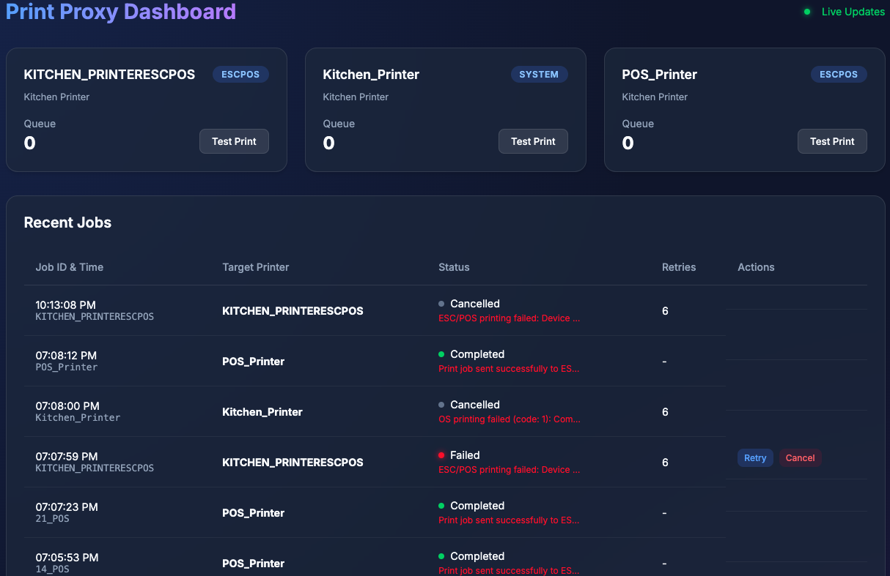

Ridhira POS Print Proxy
Zero-Lag Enterprise Printing for Odoo POS

Advanced asynchronous background queueing ensures your POS operator never experiences UI freezing while waiting for a network printer.
Built-in SQLite database safely stores pending jobs. If the power goes out, your receipts will print automatically when the system boots back up!
Manage your entire kitchen queue, instantly retry failed jobs, and monitor printer connections from a stunning real-time web dashboard.
Seamlessly supports Native OS Printers (USB), Direct Raw Network ESC/POS, and Mobile QR Code Self-Ordering all concurrently.

Real-time Queue Management Dashboard
Follow these simple steps to install the module in Odoo and configure the external Python print proxy.
The module folder (ridhira_pos_kitchen_print_direct) must be placed in your Odoo custom addons directory.
ridhira_pos_kitchen_print_direct/static/src/js/pos_print_override.jsPROXY_URL to your proxy's IP. The port must be 9100.
The external Python proxy must run on a machine (POS device, Raspberry Pi, or PC) that has network access to your printers.
Run the following command to install the required high-performance server libraries:
http://127.0.0.1:9100/detectThis module natively supports Self Orders placed from mobile devices. Users will be able to place QR mobile orders from their phones, and it will effortlessly follow the same high-speed proxy path as direct cashier orders.